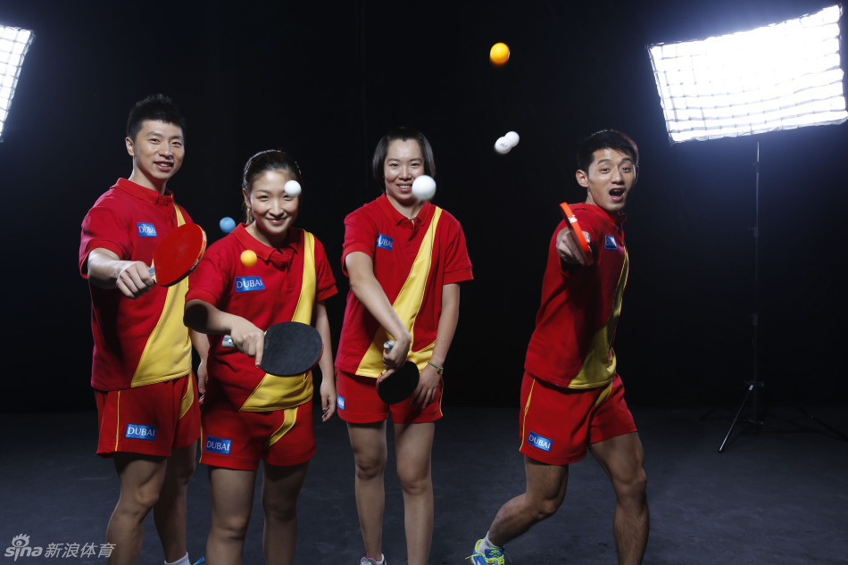

about
table tennis
table tennis
table tennis is a kind of intersting sport,which is great
ITTF
pin
gpong pppppp

-
马龙
中国男子乒乓球员，辽宁人。首位集奥运会、世锦赛、世界杯、亚运会、亚锦赛、亚洲杯、巡回赛总决赛、全运会单打冠军于一身的超级全满贯男子选手。至2017年12月，马龙连续34个月、累计64个月排名世界第一。
-
张继科
中国乒乓球国手，山东青岛人。与瓦尔德内尔、刘国梁、孔令辉、马龙并列为五位大满贯男选手，十位大满贯男女选手之中以最短时间（445天）完成。赢得一枚奥运会单打金牌（2012），连续两届世乒赛单打冠军（2011、2013）和两个世界杯单打冠军（2011、2014）。
-
丁宁
现任中国女子乒乓球队队长，中国女子乒乓球运动员，中国第五位实现乒乓球“大满贯”的女子运动员，生涯取得20个世界冠军头衔，仅次于取得24个世界冠军头衔的王楠。